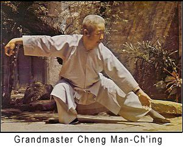
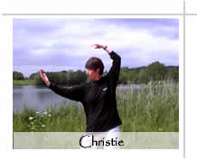

Rising Phoenix Tai Chi
Our mission and delight is to offer instruction in Cheng Man Ching Yang style Tai Chi and Qigong. Without the use of drugs or special equipment, these ancient Chinese exercise systems can help us maximise our chances of living a healthy, long, harmonious life.

The gentle exercises help relieve stress and are suitable for people of all ages, abilities, creeds and aspirations. Rising Phoenix is dedicated to providing the stimulus to help individuals and groups develop a profound level of focus and self-healing.
For those who wish to enhance their performance in sports of all kinds, there are hidden gems within these systems which use 'body-mind' to help improve core stability and strength as well as the ability to focus concentration on chosen goals.
Christie is a full-time teacher with more than 25 years experience and is Tai Chi Union of Great Britain approved. She is qualified in massage via the London School of Alternative Medicine and is a City and Guilds qualified Seated Accupressure Therapist.
Rising Phoenix holds regular classes and workshops which include Tai Chi, Qigong, Push Hands, Ta Lu, Sword Form, Bo Staff and Moving Five Elements Exercise.
Christie also offers individual tuition and therapeutic body work using Acupressure & Reiki.

Rising Phoenix is also fortunate in having a dedicated circle of Senior Students and Assistant Teachers who can hold classes and provide support in many ways, including making the tea! We view Tai Chi as a continuing journey of discovery, which we delight in sharing.
Christie facilitates workshops for Corporate Clients and Health Professionals.
Tai chi… might well be called “medication in motion.”
There is growing evidence that this mind-body practice…
has value in treating or preventing many health problems.
– Harvard Medical School’s Harvard Health Publication, May, 2009
All Site Content ©2018 Rising Phoenix Tai Chi
our privacy policy
Built and supported by
Cardiff Web Design,Search Engine Optimisation
and good cause fans Clear Intent